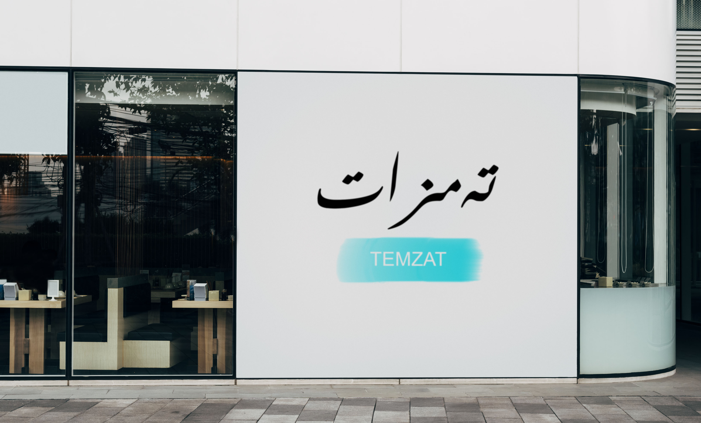

20 يىل ئىچىدە،بىز ئاددىي بىر ئاشخانىدىن 1000تارماق رېستۇرانى بار بىر چوڭ كارخانا ھالىتىگە كەلگۈچە نۇرغۇنلىغان مۇساپىلەرنى بېشىمزدىن كەچۈردۇق،بۇ سەزگۈرەشتىمىزنى سۆزلەشتىن بۇرۇن كارخانىمىزنىڭ قۇرغۇچىسى مەخمۇدجان ئەپەندىمنىڭ ھېكايسىنى سۆزلەشكە توغرا كىلىدۇ.
2001-يىلى ئالىي مەكتەپنى پۈتتۈرگەن مەخمۇتجان ئەپەندىم ئۈزىنىڭ كەسپىگە ئالاقىدار كۆڭۈلدىكىدەك خىزمەت تاپالمىغانلىقتىن ،ئۆيدىكىلىرىنىڭ ياردىمى بىلەن سافاكۆيدە كىچىك بىر ئاشخانا بوسىمۇ ئېچىپ تىجارەت قىلىپ كىرىم قىلىشنى مەقسەت قىلىپ ئىش باشلىغان.ئاشخانا گەرچە كىچىك بولسىمۇ،ئاشخانا بېزەكلىرىنىڭ نەپىسلىكى ۋە پاكىزلىقى بىلەن تۈرك قېرىنداشلارنىڭ ياقتۇرىشىغا ئېرىشكەن.مەخمۇدجان ئەپەندىم باشتا ئازران زىيان تاتسىمۇ ئاشخانىغا ئەتكەن تاماقلىرى ئادەمنىڭ تىلىدىن كەتمەيدىغان ئاشپەز ئۇستامنى تەكلىپ قىلغان.ۋە ھەرخىل پائالىيەتلەرنى ئۆتكۈزۈش ئارقىلىق سافاكۆيدە كەڭ تۇنۇلغان.ئۇيغۇر تاماقلىرىنىڭ يىيىشلىكى ،باھاسىنىڭ مۇۋاپىقلىقى تۈرك خەلقىنىڭ ئالقىشىغا ئېرىشكەن.شۇنداق قىلىپ قىسقىغىنە 1يىل ئىچىدە كىچىك ئاشخانا بارا -بارا تەرەققىي قىلىپ تەمزات رېستۇرانىغا ئايلانغان.
مەخمۇد ئەپەندىمنىڭ سەمىمەتچىل،تىرىشچان تەدبىرلىك ئادەم ئىكەنلىكىنى كۆرگەن باشقا ئۇيغۇرلارمۇ تۈركىيەنىڭ باشقا شەھەرلىرىدە ئوخشاش ماركىدا زەنجىرسىمان تەمزات رېستۇرانلىرىنى ئىچىشقا باشلىغان.رېستۇراننىڭ مەيلى مۇھىتى ،تاماقنىڭ يىيشىلىكى ۋە باھاسىنىڭ مۇۋاپىقلىقى خەلىقنىڭ ياقتۇرىشىغا ئېرىشكەن. مەھمۇد ئەپەندى كارخانىنى يەنە بىر ھەسسە يۇقۇرى كۆتۈرۈش مەقسىتىدە بىزنىڭ ئاتا مىراس ئۇيغۇر نانلىرى تۈركىيەنىىڭ زەنجىرسىمان داڭلىق تاللا بازىرى BIM غا كىرگۈزگەن. چوڭ بىر كارخانا ئىگىسىگە ئايلانغان مەخمۇد ئەپەندى ھەر يىلى 120 ياشنىڭ IT كەسپىدە ئوقۇپ خىزمەت تېپىشىغا ئىقتىسادى جەھەتتىن چوڭ ياردەم قىلىپ كەلمەكتە. كارخانىمىزنىڭ كۈندىن كۈنگە كۆكلەپ ياشنىشىغا جانابى ئاللاھتىن تىلەيمىز.